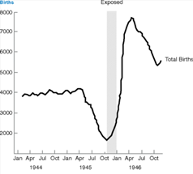
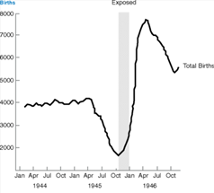

In this part of the project, we discuss how nutrition is directly related to the issue of , and how Jasanoff’s idea of co-production, which suggests that knowledge is derived from the interactions of science and society, and that they are intrinsically tied to each other, can be applied to the scientific object of food and nutrition. Through the analysis of research carried out, we observe how food and nutrition, a necessity of society, directly affects our mental health processes, emphasizing the influence scientific research has on society.
In scientific research made on the relations between nutrition and mental health, it has been determined that despite the genetical differences between members of society, food does indeed have a significant part to play in maintaining mental health, as consuming proper nutrition provides the required nutrients for all components of the nervous system, allowing for the body’s optimal function (3). For example, consuming cruciferous vegetables rich in isothiocyanates would allow the body to optimize physiological functions like learning and memory, as it directly upregulates NRF-2, the gene transcription factor that manages these functions in the brain. However, the inverse is also true; if a subject’s diet would contain toxicants which stress their nervous system, causing negative mental health results. One such example is observation of how the display of hyperactivity in children due to an increased consumption in artificial food dyes and preservatives. (3)
Despite these facts, it has been observed that there has been a dramatic increase in sugar, trans fat and salt content in heavily processed food, to amplify flavour, and do not provide the required nutrients needed (2). Indeed, the constant consumption of these foods would lead to further mental health issues like anxiety or depression. This could be due to a few factors, one of which is the increased consumption of artificial sweeteners in heavily processed food. Our bodies are unable to deal with high doses of glucose/sugar, and sudden surges of insulin, which manages glucose levels in our bloodstream. As such, by exposing it to artificial sweeteners, such as High Fructose Corn Syrup (HFCS), that possess high levels of sugar, our body would release adrenalin to try to manage this rise. Consequently, as adrenalin is an acute stress hormone, we would experience

Nevertheless, this begs the question: how do these scientific facts directly affect society? Simply put, it highlights the fact that heavily processed food is unhealthy for us, and should be avoided. In reality, however, it is much more difficult to do so, as there are multiple societal factors that affect the choices we make when purchasing and consuming food, emphasizing the importance of co-production, as we make these decisions despite having the knowledge of the disadvantages of consuming heavily processed food. One of the major influencers of our decisions is the factor of cost; the prices of heavily processed foods tend to be comparatively lower than fresh ones. Fresh food has to be sold at an increased cost due to their high perishability requiring more expensive storage. In comparison, heavily processed food can be easily produced at a higher rate, and are often subsidised by governments, leading to a lower cost and thus a cheaper price overall (4).
Ironically, these subsidies are actually triggered by our decisions to favour cheap and convenient processed junk, leading to governments giving subsidies to those that produce this junk.(4) This calls into question: if we were to base our diets on scientific knowledge, and avoid heavily processed foods, would fresh food, which are currently sold at premiums, be more accessible?
Sadly, this situation is currently unavoidable for certain members of society, and traps the underprivileged in a cycle of negative results. Due to a lack of funds, the poor are forced to consume cheaper foods which are heavily processed. However, these foods lack proper nutrients, and limit their ability to learn and work. These limitations would hamper their attempts to break out of the poverty cycle by causing mental issues, which result in them being unable to earn enough money to do so. These processed foods may even cause physical medical problems due to toxins which may be present in these foods, resulting in a further draining of funds. This process highlights the concept of co-production by showing how science permeates into certain sectors of society, and that science and society are not mutually exclusive.

Generational Impact
However, the effects of the lack of nutrition do not end there; research has shown that this lack of nutrition may have further repercussions, and might affect the offspring of the malnourished, making it even harder for families to break out of the poverty cycle. Evidence by a study focused on the effects prenatal nutrition has on adult mental health suggests that a lack of proper nutrition would result in an uptick in mental health issues in the population. The study focuses on how prenatal malnutrition (i.e. malnutrition of the parents) directly affects the probability of a child eventually developing mental issues such as schizophrenia later in their life, essentially underlining that nutrition is especially important when discussing the issue of mental health. (1)
 

As displayed from the figures above, the study uses comparison of births versus probability of mental health issues developing to support their argument. The scientists observe that a lack of nutrition, which leads to a lower amount of birth, directly affect the mental health of subjects. The events that cause a lack of nutrition were caused by different societal issues, such as World War II for the Dutch example and the Great Leap Forward for the Chinese example, triggering famines, and a lack of births, due to food rationing limiting the amount of nutrition received by parents. (1) Consequently, the lack of nutrition would display an increase in the amount of patients with mental issues through prenatal malnutrition, further emphasizing the importance of co-production, as it highlights how societal issues directly affect scientific/medical ones, and vice versa.
Conclusion
Essentially, through research, it can be concluded that the effects of nutrition, or most importantly the lack of it, have a direct impact on both the physical and mental health of members of society. These results highlight the importance of using science to assess the effects objects, such as food, have on society, as it can reveal negative consequences hidden in these objects. Most importantly, it further cements Jasanoff’s idea of co-production, as they display how science and society are intrinsically tied to each other, as the lack of proper nutrition, due to societal reasons such as poverty, may cost negative consequences, some of which may be long lasting.
References
(1) Harper, K., Susser, E., Clair, D., Bendich, A., & Deckelbaum, R. (2010). Linking Prenatal Nutrition to Adult Mental Health. In Preventive Nutrition: The Comprehensive Guide for Health Professionals (pp. 705–720). Humana Press. https://doi.org/10.1007/978-1-60327-542-2_27 (2) Galil, N., Hedaya, R., Marian, M., & Mullin, G. (2017). Nutrition and Mental Health. In Integrating Nutrition Into Practice (1st ed., pp. 407–418). CRC Press. https://doi.org/10.1201/b22342-18 (3) Shetreat-Klein, M., Marian, M., & Mullin, G. (2017). Neurology and Nutrition. In Integrating Nutrition Into Practice (1st ed., pp. 419–438). CRC Press. https://doi.org/10.1201/b22342-19 (4) Why are processed foods cheaper than fresh foods? | Eating and Society. (2020). Retrieved October 18, 2020, from Sharecare website: https://www.sharecare.com/health/eating-and-society/why-processed-foods-cheaper-fresh